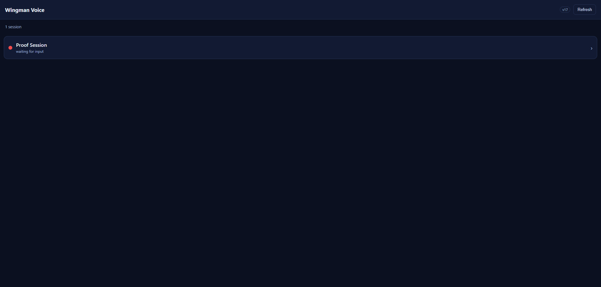
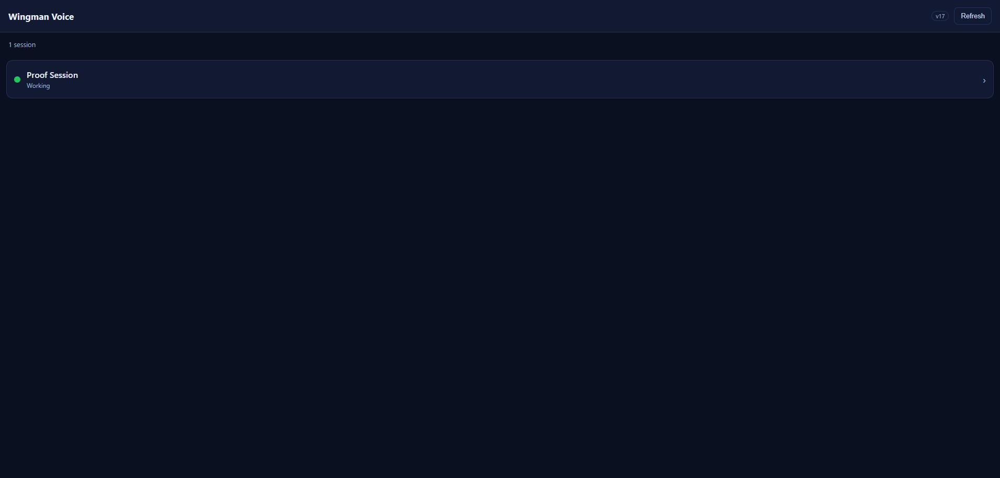
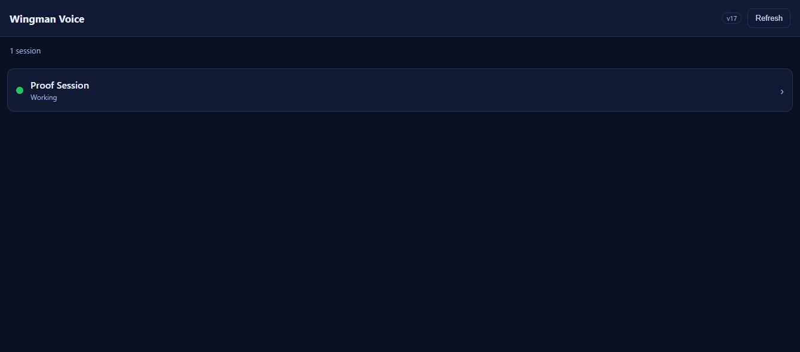
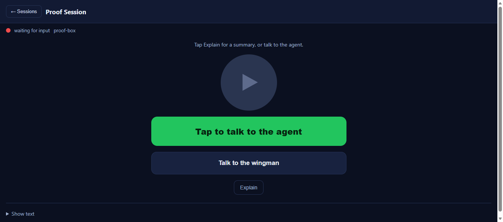
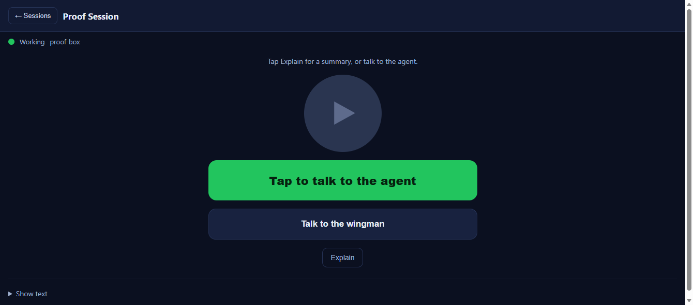
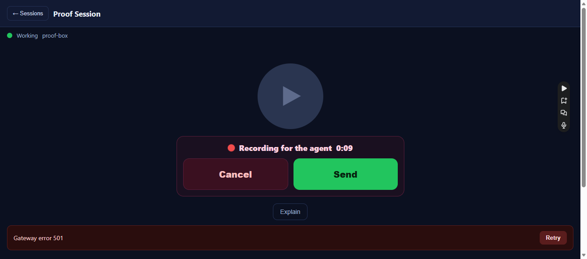
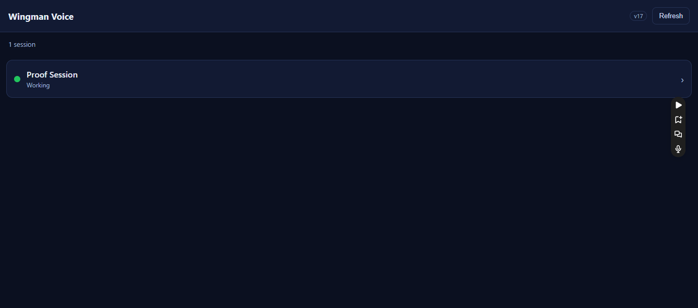

Verification method: the EXACT committed /m/ assets (index.html, m.js, m.css, sw.js)
were served by an independent QA HTTP harness (written fresh by QA, not reused from the developer) that stubs the gateway
endpoints (/sessions, /wingman/voice/ready) with a controllable session state/color and logs every request.
The page was driven in a real Microsoft Edge browser. Visibility-gated behavior was exercised both via real tab
hide/show and via a page-level document.hidden override that fires the real visibilitychange event,
so the product's own handlers run. Request counts come from the harness request log (ground truth).
dotnet build cc-director.sln) succeeded with 0 warnings / 0 errors. No adjacent regression observed.
Change is client-only static JavaScript under wwwroot/m/; no server/architecture/security surface, no CenCon doc impact.| # | Criterion | Expected | Actual (observed) | Result |
|---|---|---|---|---|
| 1 | List auto-refreshes ~every 5s while visible; dot/state reflect a gateway change without a tap. | Change gateway state; list updates within ~5s with no Refresh tap. ~2 /sessions per 11s. |
Flipped gateway red→green/Working. With no tap, the list dot went red rgb(241,76,76)→green rgb(34,197,94) and state →"Working" within 7s. Request log: 2 /sessions over 11s. |
PASS |
| 2 | Single-session view dot/state auto-update ~every 5s. | #sv-dot/#sv-state update within ~5s after a gateway state change. |
In session view, flipped gateway green→red→green; #sv-dot/#sv-state tracked each change within one 7s window (2 /sessions per 11s while in session view). Screens 04 (red) / 05 (green). |
PASS |
| 3 | On foreground (wake/unlock/re-focus) the visible screen refreshes within ~1s, not on next tick. | After hidden→visible, an immediate /sessions within ~1s. |
Hid /m/ (background tab), changed gateway while hidden, then foregrounded: 2 /sessions fired within 2s and the dot reflected the state set while hidden. Screen 03. |
PASS |
| 4 | No polling while hidden (document.hidden); resumes on foreground. |
Tab hidden → zero /sessions requests. |
With /m/ backgrounded (document.hidden=true), 0 /sessions over 12s despite a gateway state change; resumed on foreground. |
PASS |
| 5 | Auto-refresh never disrupts an in-progress action (playback / recording / summary / typed text / busy state). | Start a recording / have typed text; a tick must not interrupt or reset it. | (a) Typed "QA-NONDISRUPT-12345"; survived a tick that updated the dot. (b) Started a REAL recording ("Recording for the agent 0:09"); flipped gateway to red during it - the tick was SKIPPED (sessionViewBusy() via rec), dot stayed green, recording continued uninterrupted. Screen 06. |
PASS |
| 6 | A transient failure does not blank an already-rendered list/view; last good state stays; polling continues. | Kill the backend; list stays rendered; on recovery polling resumes. | Stopped the harness entirely; across ~2 failed quiet ticks the list stayed "Proof Session | Working | 1 session" (no blank, no error wipe). Screen 07. On restart, 5 /sessions over 12s and the list re-rendered to the new state. |
PASS |
| 7 | Manual Refresh button still triggers an immediate refresh. | Clicking Refresh fires /sessions immediately. |
Clicked Refresh; /sessions fired within 1s; list re-rendered. |
PASS |
| 8 | Cache-bust version incremented (m.js?v= / m.css?v= and on-screen label). | v16→v17 across index.html, m.js, sw.js; on-screen "v17". | Diff confirms v16→v17 in index.html (asset query + label), m.js header, and sw.js (v15→v17). Page served m.js?v=17/m.css?v=17; on-screen label reads "v17" in every screenshot. |
PASS |
List initial (red):

List auto-refresh to green/Working (no tap):

Foreground refresh surfaced the state set while hidden (green):

Session view auto-refresh - red:

Session view auto-refresh - green/Working:

Non-disruption: dot stayed green ("Working") while a recording continued, despite a gateway change to red:

Transient failure: list stayed intact with the backend down:
